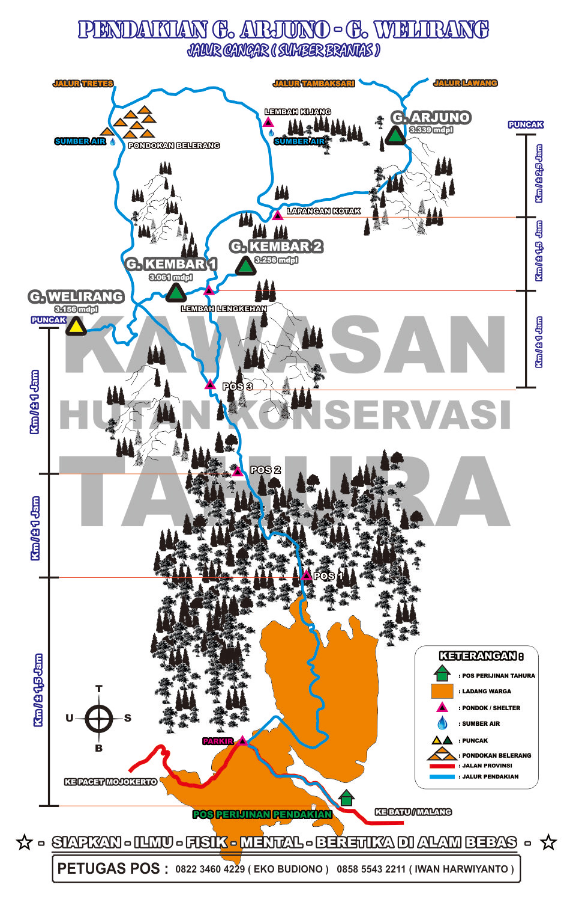
JALUR PENDAKIAN VIA CANGAR (SUMBERBRANTAS)
Sebelum melakukan pendakian, kita diwajibkan melakukan perijinan. Lokasi pos perijinannya berada di Kelurahan Sumber Brantas, Kecamatan Bumiaji, Kota Batu; bersebelahan dengan Pos Pengamanan Hutan Taman Hutan Rakyat (Tahura) R. Soerjo. Untuk menuju ke sini, mula-mulanya kita harus berkendara dari sebelah utara alun-alun Kota Batu ke arah barat sampai bertemu perempatan lampu merah. Dari sana kita lalu belok kanan melalui Jl. Brantas. Ikuti saja jalan utama tersebut sampai kita sampai di sekitar Sumber Brantas. Jika kita sudah bertemu dengan Gerbang masuk Arboretum Sumber Brantas, artinya pos perijinan sudah dekat. Pelankan kendaraan dan lihat papan besar bertuliskan pos perijinan pendakian di sebelah kanan jalan.
Kontak
- 0822 34604229 (EKO BUDIONO)
- 0812 22001972 (IWAN H.)
Basecamp rph 04
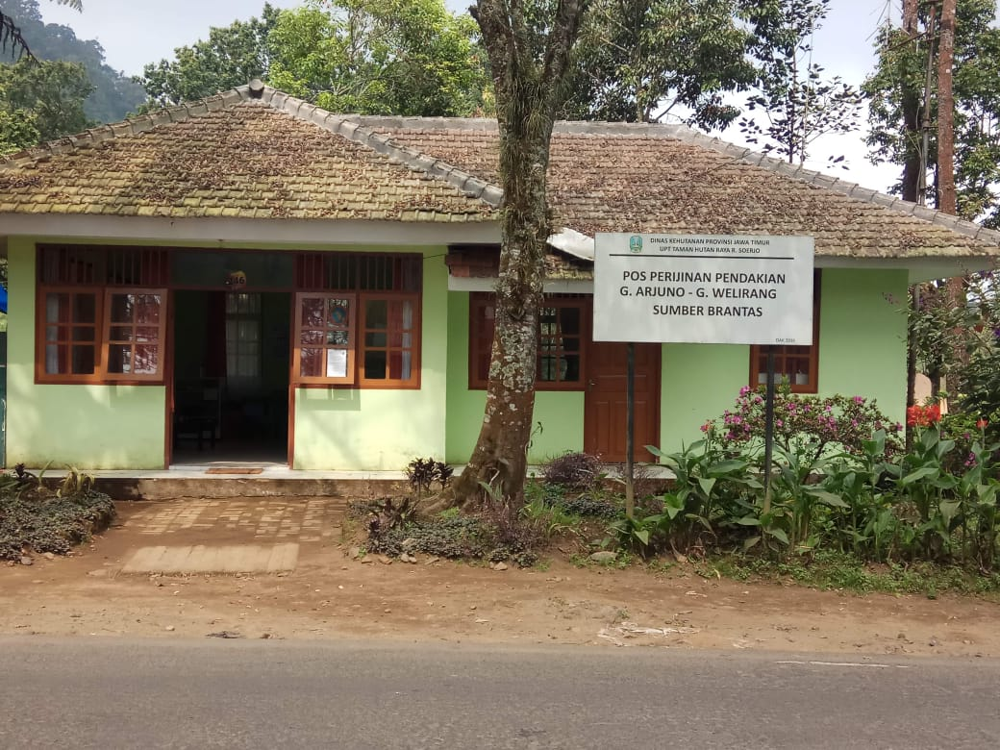
Basecamp RPH 04 - Pos 1 Brakseng (2 Jam)
Dari tempat parkir sampai dengan pos 1, tidak ada plakat yang bisa kita jadikan pedoman untuk menuju pos pertama. Satu-satunya harapan adalah peta yang sudah diberikan penjaga pos. Jadi, jika perlu bantuan lain, jangan pernah ragu untuk bertanya pada warga sekitar yang bekerja di sekitar ladang.
Estimasi waktu yang diperlukan untuk berjalan sampai Pos 1 yakni berkisar 2 jam. Untuk menuju Pos 1, kita juga bisa memanfaatkan jasa ojek yang telah disediakan oleh petugas pos. Ojek tersebut merupakan warga lokal yang telah bekerja sama dengan pihak RPH 04. Untuk menggunakan jasa ojek tersebut, pendaki hanya merogoh kocek berkisar antara 20.000 hingga 25.000 saja. Waktu yang ditempuh ketika menggunakan jasa ojek yakni cuman 20 menit saja.
Di sini tekad pendakian kita akan diuji. Perjalanan awal kita tidaklah langsung disambut oleh pepohonan hutan yang rindang, melainkan terik panas dan jalan makadam penuh cabang melewati ladang warga. Kuncinya, jangan malas untuk terus memeriksa peta yang sudah diberikan oleh petugas perijinan. Selalu cek rute trekking kamu, karena sebagian besar jalan utama menuju titik awal pendakian adalah jalan makadam yang penuh cabang.
Di ujung perjalanan panjang menyusuri ladang, kita akan menemui sebuah gubuk dengan papan kayu bertuliskan ke mana arah pendakian. Di depannya, hutan hijau juga sudah mulai menyambut kita.
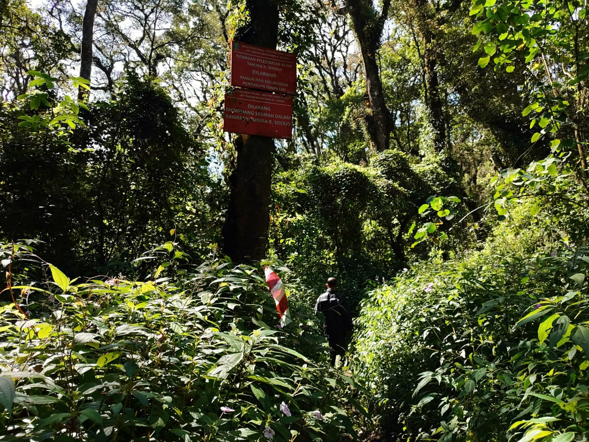
Pos 1 brakseng - Pos 2 Watu gede (1.5 Jam)
Rute pendakian mulai dari pos 1 sampai dengan pos 2 relatif santai. Tidak terlalu menanjak, namun panjang. Butuh waktu 1.5 - 2 jam untuk melalui treknya. Pos 2 ditandai dengan plakat hijau dan sebuah batu besar di sebelah kanan daerah landai. Di pos ini, tersedia sedikit tempat landai untuk membangun 2 tenda.
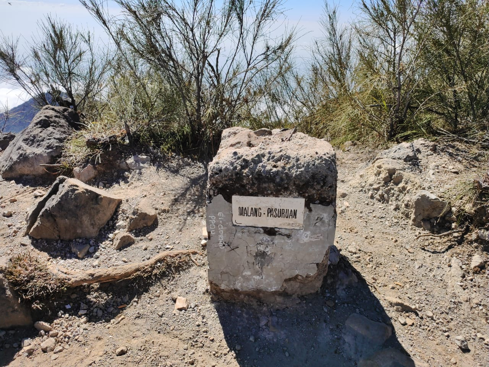
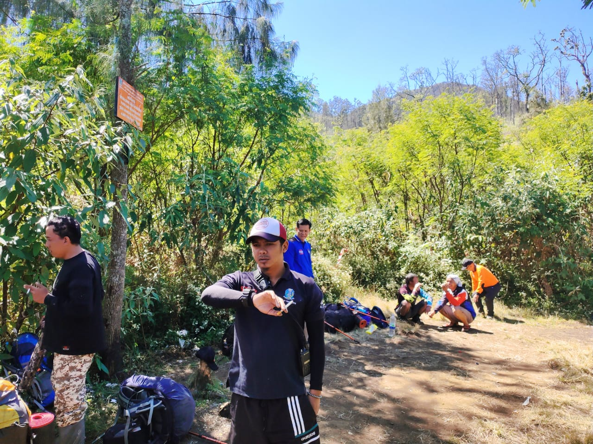
Pos 2 batu besar - Pos 3 Daplang (1.5 Jam)
Setelah dari pos 2, kemiringan trek pendakian masih relatif kecil. Namun di sini kita lebih diuji ketahanan kita untuk berjalan di medan trek yang cukup panjang. Apalagi di tengah perjalanan, kebanyakan vegetasi hutannya hanya berupa semak dan beberapa pohon kecil, sehingga akan terik saat siang hari.
Di pos 3 kita bisa mendirikan tenda, karena ada banyak area landai yang tersedia. Atau, kita juga bisa melanjutkan perjalanan menuju Lembah Lengkean (Pos 4) melalu salah satu cabang jalan yang ada di pos tersebut, karena di pos 4 dan sekitarnya terdapat area yang sangat luas untuk mendirikan belasan hingga puuhan tenda.
Ada cabang jalan yang akan kita temui di pos 3. Cabang pertama untuk langsung menuju Gunung Welirang. Jika memilih cabang ini, kita akan melewati hutan yang cukup lebat dan tanjakan yang lumayan berat. Meski begitu, jarak yang ditempuh relatif lebih pendek.
Sementara itu, cabang yang satunya lagi harus dipilih jika hendak melalui Lembah Lengkean (Pos 4) terlebih dulu. Jika menargetkan Puncak Arjuno, cabang jalan ini pula yang wajib kita pilih.
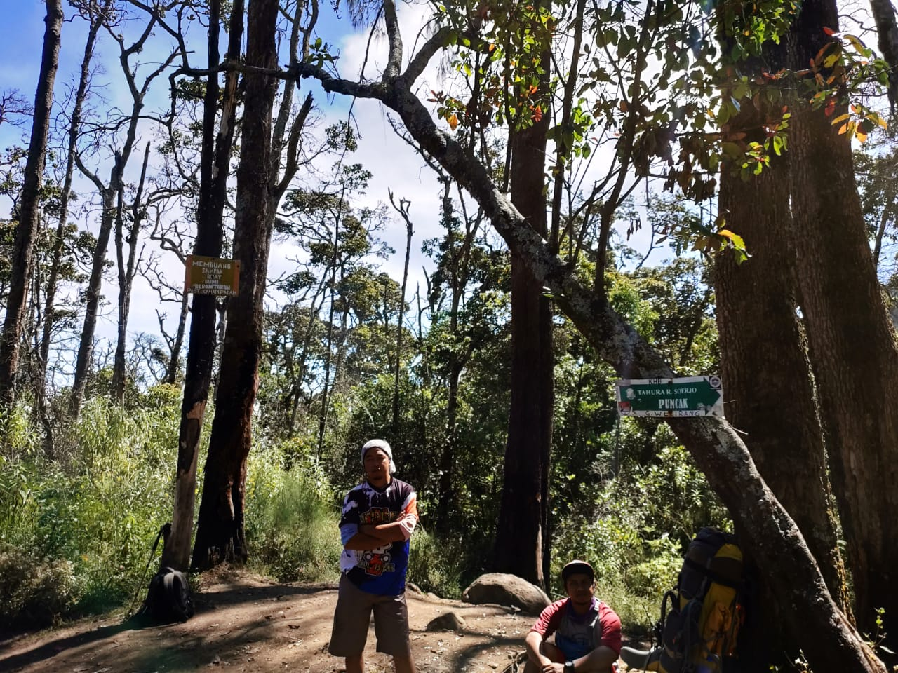
Pos 3 daplang - Pos 4 Lembah Lengkean/sadelan (1 Jam)
Sebelum menginjak Lembah Lengkean, kita akan merasakan suasana yang berbeda. Vegetasi pohon mulai berubah menjadi gugusan cantigi besar nan lebat, seakan menambah kesan angker. Perlahan kemudian, gugusan pohon cantigi mulai jarang dan berganti vegetasi rumput di atas padang rumput berbatu yang cukup luas. Pemandangan padang rumbut ini seakan-akan menjadi penyambut tamu di Lembah Lengkean. Kira-kira butuh waktu 2 jam untuk melewati seluruh tanjakan dan vegetasi hutan menuju lembah Lengkean. Dari seluruh perjalanan sebelumnya, bisa dikatakan kalau inilah awal tahapan pendakian yang sebenarnya. Yup, tanjakan membabi buta!
Selama perjalanan ini, kita juga akan menemukan beberapa uap panas yang memancar dari balik batu. Cocok sekali untuk kalian yang ingin merasakan bagaimana sauna dengan uap alami. Di atas uap biasanya dibentengi dengan plastik lebar dan sebuah wadah jerigen untuk menampung uap air. Kita bisa mengambil air ini untuk menambah persediaan minum kita selama mendaki. Tapi, kita tidak boleh bergantung pada persediaan air ini, karena bisa jadi air tersebut sudah habis diambil oleh pendaki lain.
Di Lembah Lengkean, biasanya pendaki memutuskan untuk bermalam. Jika estimasi waktu sampai di sini adalah malam hari Membangun tenda untuk melindungi dari dinginnya malam yang luar biasa. .
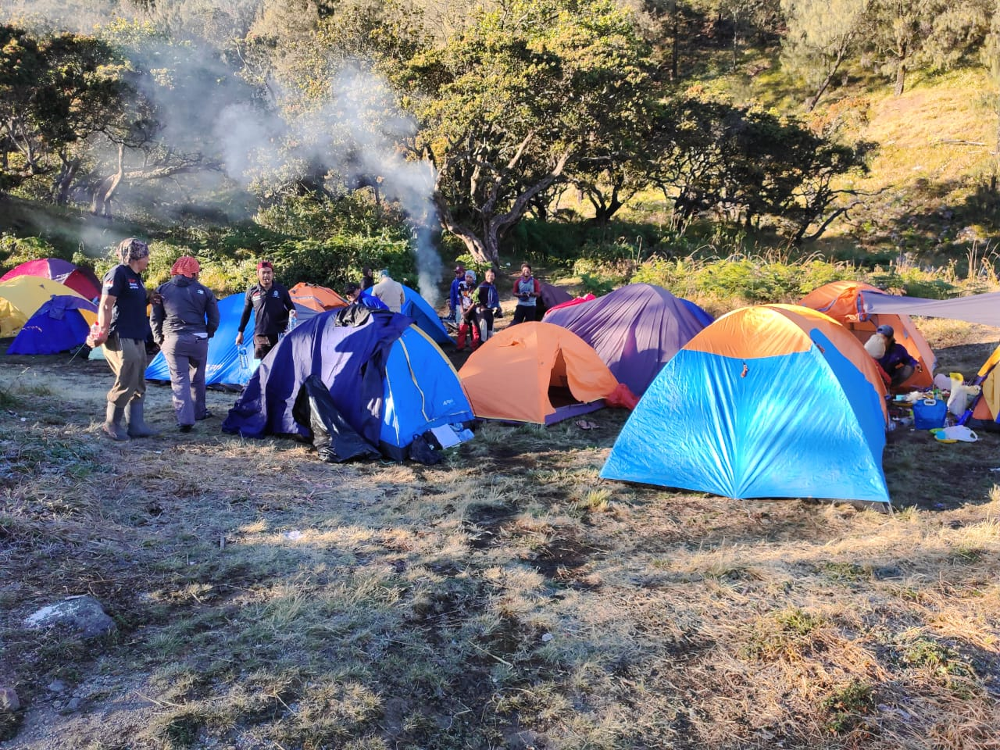
Pos 4 Lembah Lengkean/sadelan - Puncak Welirang
Dari Lembah Lengkean, kita harus memilih percabangan yang awalnya menaiki bukit. Kemudian, kita akan melalui sisi pinggir Gunung Kembar 1 menembus lebatnya hutan Cantigi. Awalnya rute jalanan masih cukup jelas, tapi setelah kita hampir dekat dengan puncak, banyak hamparan landai yang penuh cabang. Sangat dianjurkan membawa kompas untuk navigasi dan juga powerbank untuk memastikan HP tetap aktif dan bisa digunakan untuk melihat peta. Di dekat puncak, kita juga akan melihat sebuah gua kecil yang bisa kita gunakan untuk berlindung dari terik matahari ataupun hujan.
Estimasi waktu dari Pos 4 sampai ke Puncak berkisar antara 1-2 jam.
[foto puncak welirang]
Pos 4 Lembah Lengkean/sadelan - Lapangan Kotak (45 Menit)
Perjalanan berikutnya akan terasa memanjakan kakimu. Tapi jangan lengah, meski rute dipenuhi turunan dan minim tanjakan, di sini sulit ditemui flora edible dan sumber mata air. Pastikan juga perbekalan kamu cukup, karena setelah lapangan kotak, diperlukan waktu yang sangat panjang dan melalui banyak tanjakan yang amat melelahkan. Perjalanan ini dilakukan dengan melalui jalan setapak melipir di sebelah timur Gunung Kembar 2 dan melalui Alas Lali Jiwo.
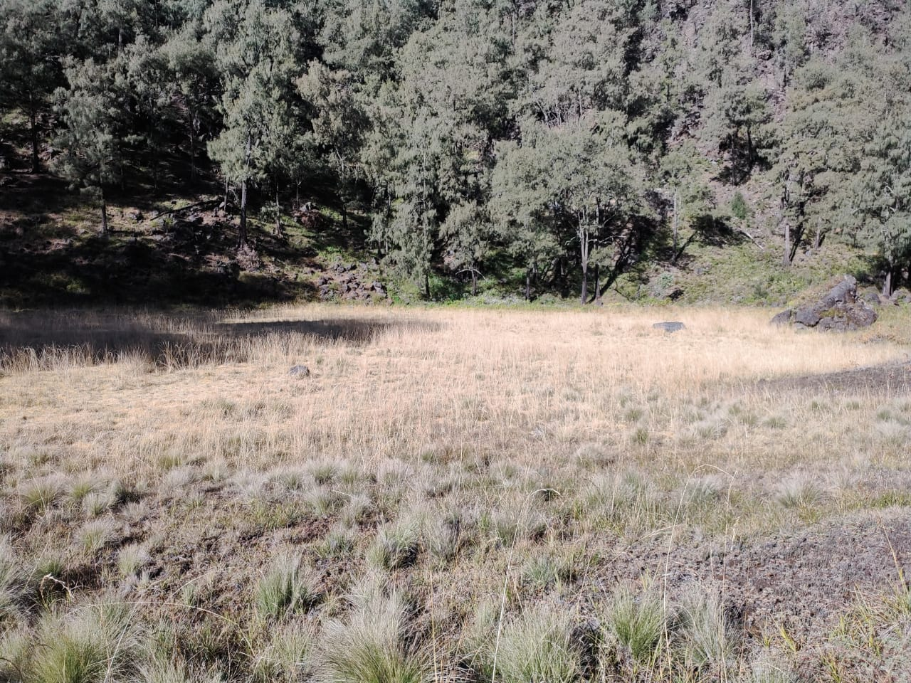
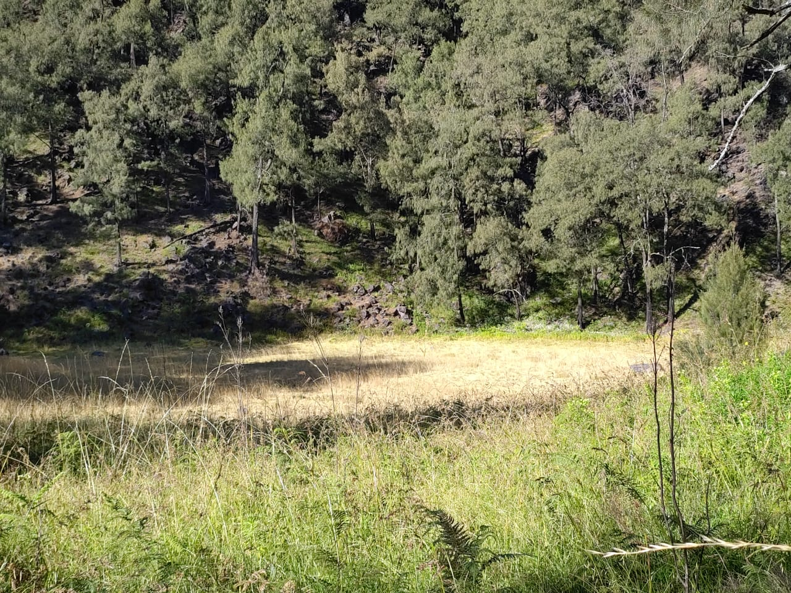
Lapangan kotak - pasar dieng (4 Jam)
Perjalanan santai akan berubah setelah kita beranjak dari lapangan kotak. Medan jalan setapak mulai berubah menjadi tanjakan berbatu. Sesekali kamu juga menemui percabangan jalan tanpa plakat yang seringkali menyesatkan. Jangan sepelekan cabang-cabang jalan tersebut, karena vegetasi hutan di sekitarnya amatlah padat dan sulit diingat. Di percabangan tersebut juga beberapa di antaranya merupakan jalur pertemuan dengan pendaki yang berangkat dari base camp lain. Jika sembrono, bisa jadi kamu pulang ke arah yang salah.
Setelah percabangan itu banyak dilewati, kita akan mulai menemui satu jalan lurus dengan plakat yang jelas. Ikuti saja ke mana plakat itu menunjukkan arah. Saran penulis, jangan terlalu memaksakan diri. Apalagi hanya karena plakat bertuliskan “Puncak 1 KM”, faktanya itu hanya plakat untuk menunjukkan jauh salah satu puncaknya. Sementara itu, untuk mencapai puncak Ogal-Agil, kita masih perlu mengeluarkan tenaga ekstra.
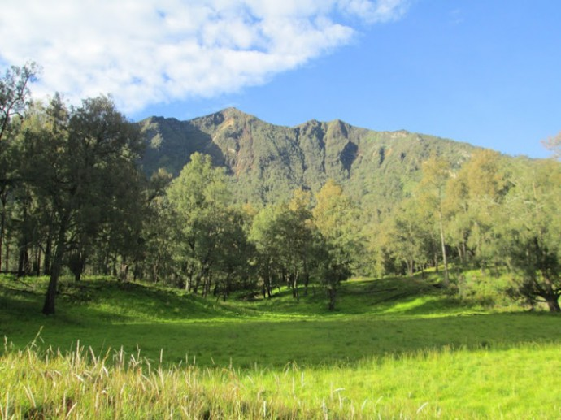
pasar dieng - gentong growah (20 Menit)
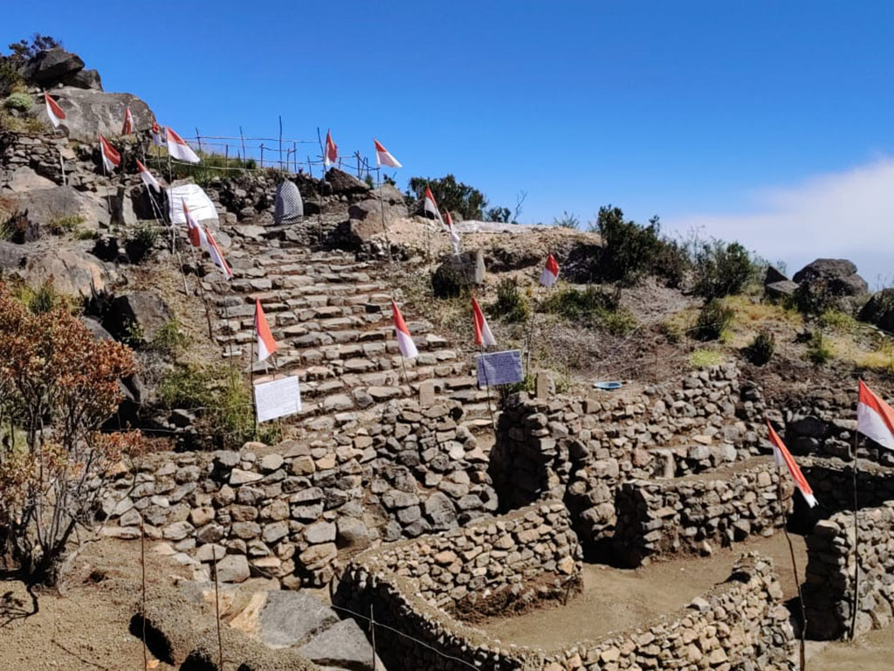
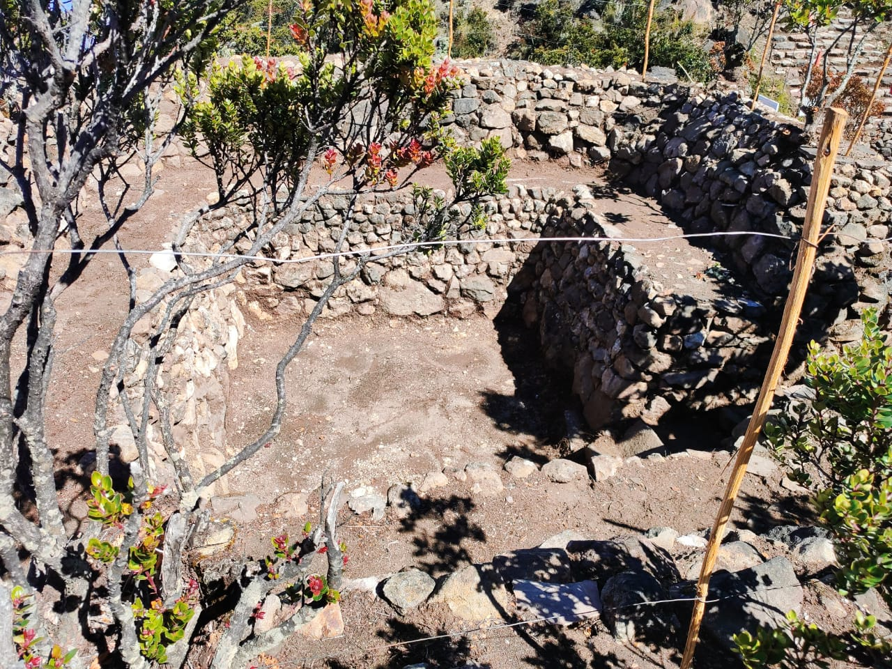
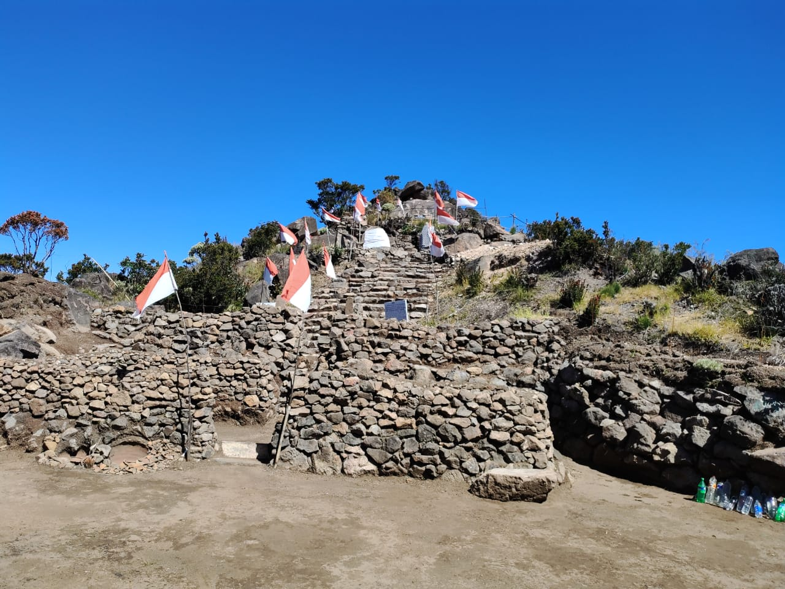
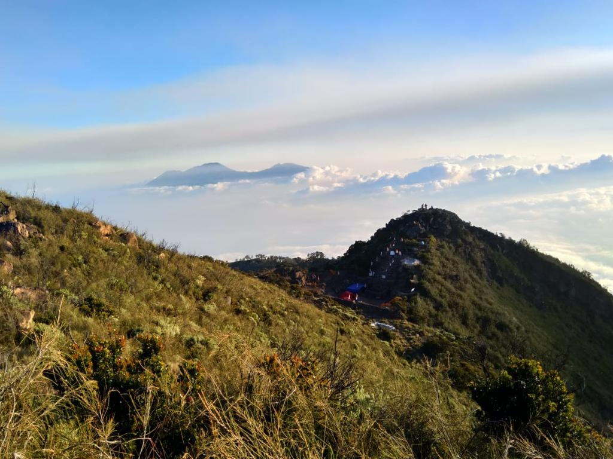
genteng growah - puncak semu (20 Menit)
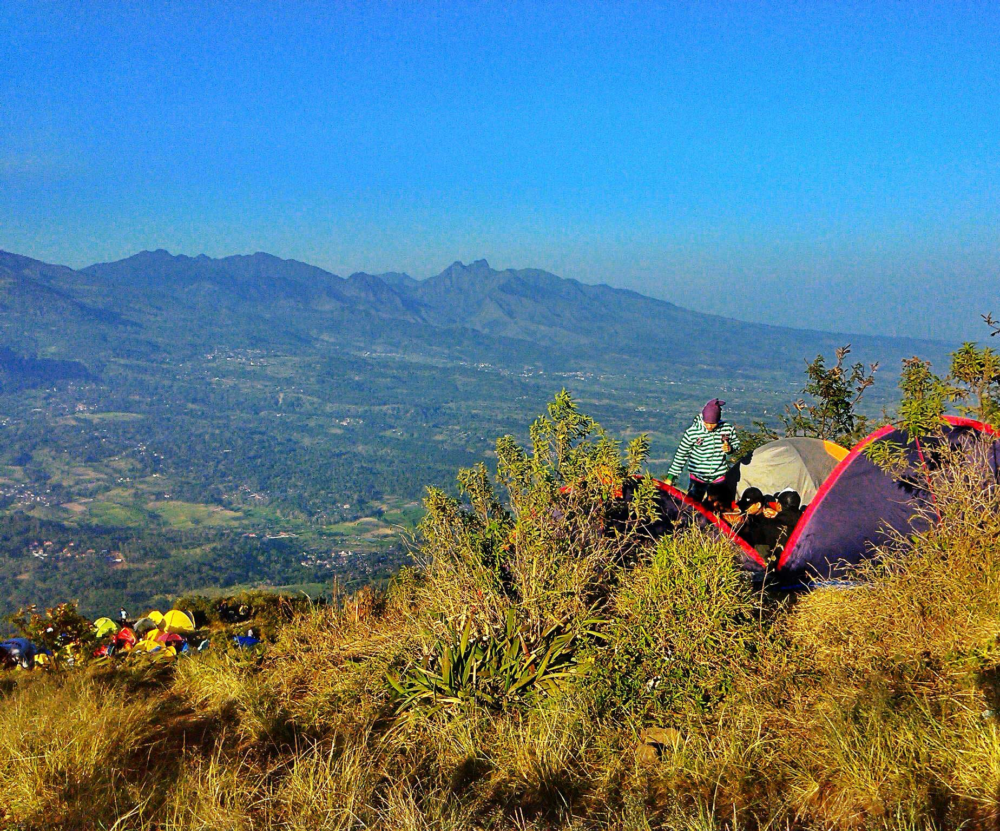
puncak semu - Puncak Gunung Arjuno (20 Menit)
Puncak Ogal-Agil dapat dicapai setelah capek naik turun puncak semu. Gugusan puncak itu akan bermuara pada pertigaan ke arah puncak semu lain dan puncak Ogal-Agil. Dari titik itu pun, puncak sejati tidak terlalu jauh untuk ditempuh.
 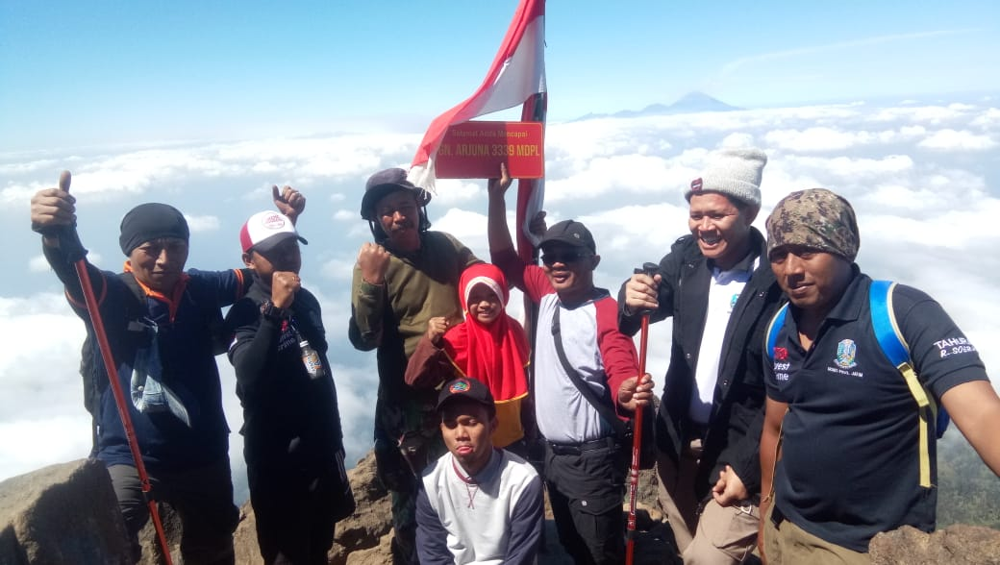
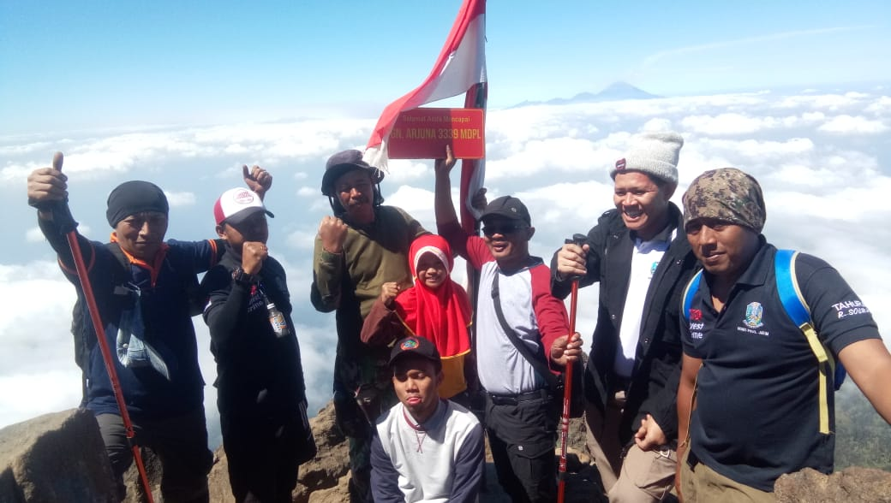
Tips Pendakian Gunung Arjuno via Cangar :
- Gunakan Peralatan dan Perlengkapan Mendaki Gunung yang lengkap untuk kenyamanan dan keamanan.
- Bawalah persediaan air yang cukup karena di sepanjang jalur nyaris tidak ada sumber air dan trek sangat menanjak.
Sumber :
- https://www.iniliburan.com/rute-pendakian-gunung-arjuno-welirang-via-cangar/